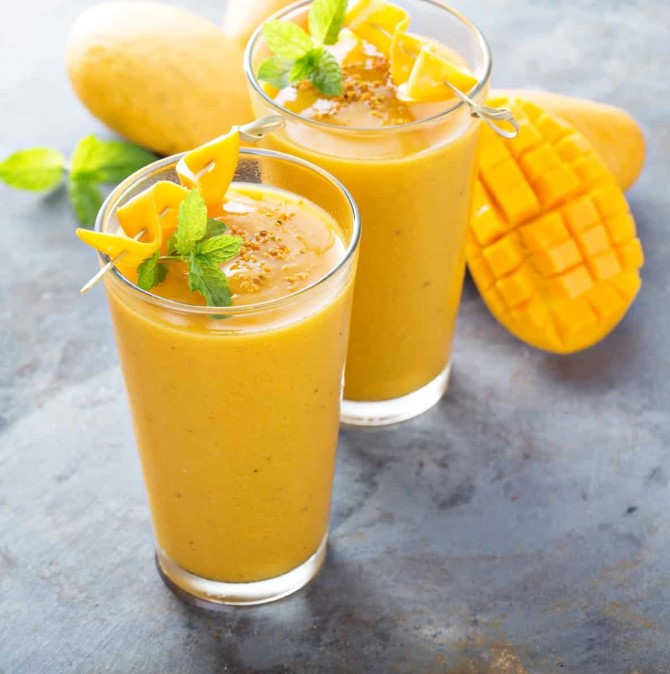

Home
Mango Lassi
A mini vacation in a glass!

Description
Mango lassi is very rich and luxurious drink with yogurt and mangoes.
It is the perfect summer drink when served chilled.
Ingredients
- 1 ½ cups mangosmangos - peeled, seeded, chopped, and chilled
- 1 ½ cups plain yogurt
- ½ cup cold milk
- 2 tablespoons heavy cream
- 2 tablespoons confectioners' sugar
- ½ teaspoon ground cardamom
Directions
- Combine mangos, yogurt, milk, cream, confectioners' sugar, and cardamom in a blender
- Blend until smooth and frothy. Pour into glasses and serve immediately.